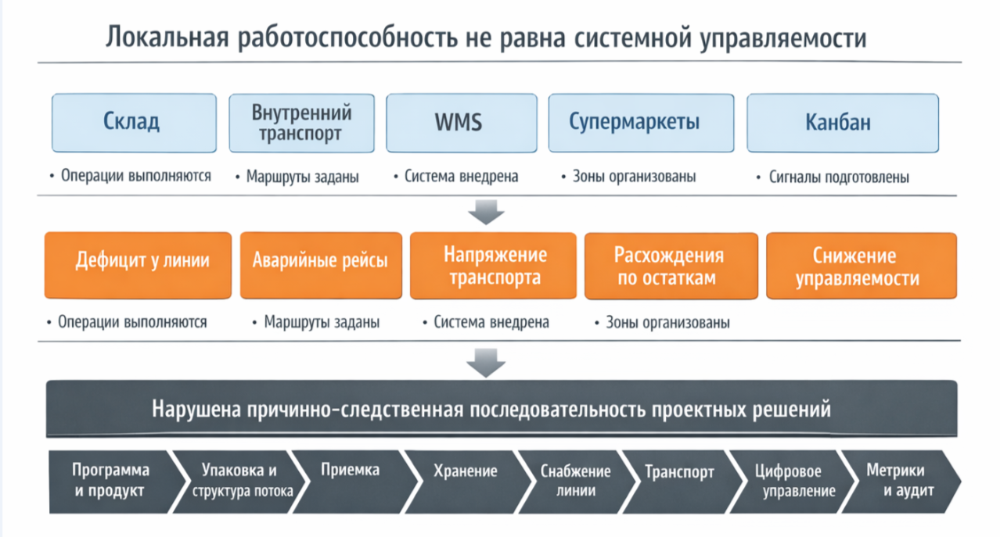

От инженера инженерам §
Сегодня существует огромное количество промышленных предприятий разных масштабов. Независимо от масштаба на каждом предприятии существует круг задач, которые решить усилиями складской логистики, SCM или средствами производственного планирования невозможно. Одна из таких задач – сквозное (E2E) проектирование процессов, в нашем случае, на автомобильном производстве. Для решения этой задачи вам понадобиться инженер… скорее всего команда инженеров.
К сожалению, на момент написания этого текста, учебные заведения РФ не выпускают специалистов, задача которых быть над системой (не вижу иного способа выполнять задачи в области инжиниринга[1] внутренней логистики, по крайней мере, на автомобильном производстве). Но это на самом деле не важно. Существует академическая дисциплина или нет, важно то, что набор задач, требований к качеству аналитики и методов уже существует. Здесь вы не найдете универсальный ответ на все ваши вопросы. Универсальных ответов нет. Этот текст может помочь вам построить структуру, разделив задачи на архетипы с четко понятными объектами (сущностями, если угодно). Построить причинно-следственную связь.
Для начала вам стоит понять, что предметом инжиниринга логистики является не продукция (конечный результат производства), не проектирование и не производство продукции, а интеллектуальный процесс решения творческих (инженерных) задач, связанных с проектирование и организацией процессов производства продукции (выполнения работ, оказаниях услуг). Об инжиниринге внутренней логистики (как и любом другом, судя по ГОСТ Р 57306-2016) невозможно говорить как об особой сфере деятельности. Это особое сочетание известных видов деятельности, позволяющее получить новый, синергетический, результат, недоступный для простой последовательности отдельных изолированных процессов исследования (изыскания), проектирования, организации и всестороннего обеспечения, собственно создания и промышленной реализации объекта (системы, процесса). Инжиниринг внутренней логистики включает в себя знания технических дисциплин (технологий построения систем, теории надежности), дисциплин менеджмента (проектный менеджмент, менеджмент качества, экологии и безопасности, менеджмент человеческих ресурсов), правовых и экономических дисциплин. Из этого следует, что задачи инжиниринга, а сквозное проектирование процессов, создание и сравнение концептуальных решений – именно такие задачи, - могут решаться только коллективами профессионалов.
Вне зависимости от того являетесь ли вы частью такого коллектива, проходите этот путь в гордом одиночестве, либо формируете команду, я предлагаю вам методологическую рамку. Так сказать – один из результатов моей инжиниринговой деятельности. От инженера инженерам.
Когда все работает по отдельности, но не работает как система §
На сборочном производстве, к коим автопром можно смело отнести, ситуация, озвученная в первом заголовке совсем не редкость. И поэтому она особенно опасна. Склад функционирует. Маршруты внутреннего транспорта определены. WMS (Warehouse Management System – Система Управления Складом) введена в эксплуатацию. Супермаркеты[2] организованы. Канбан[3]-карточки подготовлены. Формально система выглядит готовой и работоспособной. При этом производственная линия периодически останавливается из-за нехватки материалов. Внутренний транспорт работает в режиме постоянного напряжения – аварийные рейсы больше не исключение, а устойчивый фон операционной работы. Инвентаризация выявляет расхождения, которые каждое по отдельности объяснить можно, но получить устойчивый системный результат не получается. И пока отчетные показатели остаются приемлемыми, вы - специалист логистического инжиниринга, наблюдаете, как операционная логистика теряет управление системой.
Обычно такие сбои объясняют частными причинами – не хватает техники, недостаточный уровень дисциплины исполнения, система управления складом настроена не полностью. Сбой в поставке. Каждое из этих объяснений может быть верным в конкретном случае. Однако повторяемость одних и тех же сбоев показывает – источник проблемы лежит глубже. Проблема состоит в том, что внутренняя логистика автомобильного производства в реальности не делится на независимые участки по границам подразделений или по границам функциональности зон склада. Это единая причинно-следственная система. Требования к ней формируются производственной программой и характеристиками продукта, затем конкретизируются упаковкой и объектной структурой материального потока, после чего реализуются через приемку, хранение, снабжение линии и транспорт, поддерживаются системой цифрового управления и подтверждаются системой метрик и аудита. Если эта последовательность нарушается хотя бы в одной точке, локальные корректировки начинают маскировать системную ошибку, но не устраняют ее. Именно поэтому задача состоит не в локальном улучшении отдельных участков процесса, а в выстраивании такой методологии проектирования, при которой решения принимаются в согласованной последовательности и проверяются в той же логике.

Системный разрыв: почему практика воспроизводит одни и те же ошибки §
Проблема воспроизведения одних и тех же ошибок не в отсутствии инструментов или специалистов. На крупных автомобильных производствах, как правило, уже существуют WMS, ERP (Enterprise Resource Planning – Система Планирования Ресурсов предприятия), подготовленные инженеры и логисты, а также багаж накопленных практических знаний. Тем не менее одни и те же типы сбоев повторяются с удивительной устойчивостью. Это говорит о том, что проблема не только в уровне исполнения, но и в способе постановки самой задачи.
На практике внутренняя логистика часто проектируется по функциональному принципу. Склад рассматривается отдельно. Внутренний транспорт рассматривается отдельно. Снабжение линии рассматривается отдельно. Система цифрового управления рассматривается как еще один самостоятельный проект. У каждой из этих областей есть свои показатели, свои специалисты, свои инструменты и своя логика локальной оптимизации. Пока речь идет о частной задаче, такой подход кажется рациональным. Однако в тот момент, когда все это должно начать работать как единая система, обнаруживается разрыв между локально-корректными решениями и управляемостью всей системы. Именно этот разрыв затем и проявляется как нехватка транспорта, дефицит материалов у линии, недостоверность остатков, перегрузка супермаркетов или нестабильная работа WMS. Ниже описаны наиболее типичные формы такого разрыва.
Метрики не привязаны к объектам управления §
Одна из самых частых ошибок состоит в том, что показатели формируются уже после запуска системы – исходя из того, какие данные доступны, а не из того, чем действительно необходимо управлять. В результате измеряется не состояние процесса, а доступность цифрового отпечатка. Здесь особенно важно не спутать показатель с объектом измерения. Если показатель точности инвентаризации должен отражать соответствие системной записи физическому наличию материала, то объектом измерения должны быть физически подтвержденные местоположения: например, ячейки, проверенные слепым пересчетом. Если вместо этого измеряется дисциплина сканирования, то при высоком значении показателя склад все равно может оставаться фактически неуправляемым. Формально система демонстрирует порядок, но этот порядок относится не к материалу, а к процедуре регистрации материала. Здесь проблема не в слабом показателе как таковом, а в подмене объекта управления. Как только это происходит, система начинает давать убедительные, но управленчески бесполезные цифры.
Система цифрового управления существует отдельно от физического процесса §
Не менее типична и другая ситуация: WMS внедряется как IT-система, но не как инструмент управления физическими операциями. В этом случае конфигурация системы, контрольные точки и правила подтверждения разрабатываются по логике базы данных, а не по логике реального потока. Практически это выглядит так: система позволяет подтвердить пополнение, размещение или перемещение, не требуя подтверждения самого физического факта. В результате в системе, конечно, создаётся соответствующая запись, но материал в целевой точке появляется не всегда. Для оператора это может быть единичной ошибкой. Для системы – это начало расхождения цифровой и физической реальностью. Для операционного руководителя – все стабильно, до момента выявления проблемы.
Так возникает ложная цифровая уверенность – состояние, при котором система выглядит здоровой, на фактический поток описывает не в полной мере или дает искаженное его описание. Система выглядит информированной, о фактически описывает не поток, а его неполное или искаженное состояние. С момента возникновения этого разрыва любые расчеты пополнения, маршрутизации, трудоемкости и структура аудита начинают опираться на данные, которые лишь частично соответствуют действительности.
Хранение, снабжение линии и транспорт проектируются раздельно §
Следующий тип разрыва появляется тогда, когда последовательность решений нарушается уже на стадии проектирования процессов. Концепция снабжения линии выбирается до того, как определена топология хранения. Маршруты транспорта разрабатываются до того, как определен тип триггера снабжения - циклический маршрут (milk run) проектируется в предположении, что снабжение будет происходить по расписанию, но фактический триггер оказывается сигнальным (on-demand). В результате маршруты либо хронически перегружены в пиковые периоды, либо недозагружены, а транспортные ресурсы работают в режиме постоянной реакции на аварийные заказы производства.
Количество транспортных единиц рассчитывается как частное от количества маршрутов, без учета семи измерений производительности транспортной системы. Эти измерения описывают разные аспекты нагрузки и должны быть оценены до определения парка оборудования:
- Номинальная мощность – максимальное количество рейсов или перемещений, которое транспортная единица может выполнить в единицу времени при идеальных условиях (без потерь, с полной загрузкой, без ожиданий). Измеряется в рейсах/смену или HU/час;
- Эффективная мощность (с учетом потерь) – реальная производительность с учетом времени на погрузку/разгрузку, ожидание, перемещение в зонах с ограничением маневренности, пересменки и мелких простоев. Измеряется в тех же единицах, что и номинальная мощность, но всегда ниже оной.
- Скорость ответной реакции (responsiveness) – время между моментом возникновения потребности в перемещении и моментом начала выполнения этого перемещения. Характеризует способность транспортной системы реагировать на сигнальные (on-demand) триггеры. Измеряется в секундах или минутах. Низкая скорость ответной реакции при снабжении линии на основе триггера приводит к дефицитам даже при достаточной номинальной мощности.
- Утилизация – доля времени. В течение которого транспортная единица находится в движении или выполняет полезную работу, от общего времени в смену. Измеряется в процентах. Высокая утилизация (например, >85%) часто скрывает отсутствие резерва для поглощения вариабельности.
- Поглощение вариабельности – способность системы выдерживать колебания спроса (объем, микс, последовательность) без сбоев. Косвенно измеряется как отношение максимальной пиковой нагрузки, которую система может обработать без аварийных сбоев, к средней нагрузке. Система, рассчитанная на средний объем, но не имеющая запаса по скорости ответной реакции или буферных единиц в запасе, разрушается при любом отклонении от среднего.
- Потери от блокировок – время простоя транспортной единицы из-за того, что целевая зона занята (другим тягачом, перегруженный док, переполненная зона). Измеряется в минутах/в смену или процентах от времени смены. Блокировки не снижают номинальную мощность, но полностью обнуляют эффективную мощность на время простоя техники.
- Зависимость от аварийных рейсов – доля перемещений, выполняемых вне штатных операций снабжения (по сигналу дефицита). Измеряется в процентах от общего числа перемещений. Устойчиво высокий процент (>5-10%) указывает на системное несоответствие между расчетной производительностью и реальным профилем нагрузки, даже если номинальная мощность формально достаточна.
Расчет только по номинальной мощности или средней утилизации гарантированно занижает реальную потребность в ресурсах в периоды пиковой нагрузки. Более того, расчет даже по пиковым значениям объема, но без учета структуры вариабельности (как часто и как долго возникают пики, как быстро система должна на них реагировать), приводит к тому же результату: парк оборудования, достаточный по формальному расчету, оказывается хронически перегружен, а аварийные рейсы становятся не исключением, а фоновым режимом работы.
В итоге техника перегружена не потому, что ее мало, а потому что она рассчитана на условия, которых нет в реальности: ровный спрос, стандартизированные грузовые единицы (HU), предсказуемый ритм. Реальность же характеризуется вариабельностью объемов, микса и последовательности. Разрыв между проектными допущениями и фактическими условиями становится генератором системной, а не локальной перегрузки, которая не устраняется добавлением транспорта, а требует пересмотра последовательности проектирования: сначала топология хранения, затем концепт снабжения, затем транспорт.
Сравнение концептов в разных условиях §
Одна из наиболее опасных методологических ошибок возникает при сравнении альтернативных решений. Формально сравниваются два концепта. Фактически сравниваются два разных набора условий. Например, Концепт А «супермаркет + канбан + тягач» и Концепт Б «прямое снабжение со склада + ричтрак» сравниваются по «стоимости рейса» или «FTE[4] на маршрут». Сравнение не будет корректным если в одном концепте не учтены операции с отдельными компонентами при комплектации, а в другом затраты на систему цифрового управления. И таких нюансов масса: SKU-касания, в концепте Б, вообще могут быть не учтены, потому что затраты по осуществлению отбора «успешно» перенесены на производство. Может показаться, что концепт А гораздо более затратный и с точки зрения системы управления складом, но это далеко не всегда так. Затраты на извлечение грузовой единицы в концепте Б могут быть – больше расстояния, использование техники или гидравлической тележки, сложная адресация в зоне сверхплотного хранения. В то время как концепт А может легко обойтись с минимальной цифровой поддержкой – бумажные канбан-карты, визуальный контроль, ручное подтверждение пополнения.
Такой тип разрыва трудно диагностировать, потому что формальные показатели (стоимость рейса, FTE на маршрут) рассчитаны корректно. Ошибка лежит в определении периметра анализа и в неявном допущении, что «все остальное одинаково». На практике мы получаем:
Выбор концепта, который дешевле в узком периметре анализа, но дороже по совокупным затратам проектируемой системы.
Недооценку инвестиций в цифровую систему управления, необходимую для обеспечения устойчивой работы предприятия.
Системные сбои на этапе эксплуатации, которые могут быть интерпретированы как «проблемы внедрения», хотя заложены на этапе методологически некорректного сравнения.
Требование принять решение в пользу того или иного концепта не должно быть основано на сравнении условий, его необходимо принимать на основе выявленных инженерных преимуществ и недостатков. Зачастую, вместо результатов инженерной аналитики, мы сравниваем результаты методологически неверных расчетов.
Во всех рассмотренных случаях ошибка проявляется по-разному: где-то как недостоверный показатель, где-то как ложный дефицит, где-то как перегруженный маршрут снабжения, где-то как некорректное сравнение концептов. Однако источник у этих ошибок общий. Решения принимаются вне той последовательности, в которой сама система формирует ограничения. Именно поэтому устранить системный разрыв локальной корректировкой невозможно. Недостаточно отдельно донастроить WMS, отдельно пересчитать парк техники или отдельно изменить логику хранения. Необходимо сначала зафиксировать. Какие решения для проектируемой системы являются исходными, какие – производными, и в какой точке ошибка на одном уровне становится ограничением для следующего.
Иначе говоря, требуется не перечень функций внутренней логистики, а модель ее причинно-следственных связей.
Структура: метод 9 слоёв §
Такой моделью может служить метод 9 слоёв. Её назначение состоит не в формальной классификации процессов, а в фиксации последовательности, в которой должны приниматься проектные решения и выполняться расчеты. Каждый слой отвечает на свой вопрос. Первый задает язык и границы объектов. Второй фиксирует входные требования. Третий переводит физический поток в систему мастер-данных. Последующие слои последовательно разворачивают эту основу в приемку, хранения, снабжение линии, цифровое управление и верификацию.
Поэтому порядок слоёв не является условным. Он отражает не удобство изложения, а реальную логику ограничений внутри системы: каждый предыдущий слой задет рамки для следующего
Слой 1. Предметная область и терминология §
Любая инженерная работа начинается не с расчётов, а с онтологии[5] предметной области. Пока участники проекта используют одни и те же термины в разных значениях, согласованное проектирование невозможно. Ошибка здесь выглядит безобидно только до тех пор, пока она не начинает искажать расчеты, аналитику и принятые на их основе решения. Если термин «буфер» в одном обсуждении означает страховой запас, в другом – зону хранения, а третьем – параметр пополнения, то формально все говорят об одном и то же, а практически – о разных объектах.
Будучи на первом слое, мы должны установить терминологическую и онтологическую основу: классификацию сущностей, уровни иерархии. Хорошим ориентиром может служить стандарт ISA-95, или отечественный аналог – ГОСТ Р МЭК 62264-1 – 2014. На его основе можно построить модель объектов системы, с четкими границами и зонами ответственности. Стандарт нацелен на сокращение времени проектирования, цифровизации и автоматизации процессов. Простой пример критической важности этого слоя: одной из частых проблем смешения сущностей (объектов) является отсутствие четкого понимания разделения границ между HU[6] и SKU[7] при аналитике процессов. Здесь важно понимать, что SKU это единица управления планированием и учетом, а HU – единица управления потоком (исполнение, перемещение, подтверждение перемещения – сканирование). Это не синонимы и не взаимозаменяемые понятия, а два принципиально разных объекта анализа.
Язык должен быть понятным и принят всеми участниками команды. Без фиксации терминов и объектной модели провести сопоставления по следующим слоям невозможно.
Слой 2. Входы и планирование §
После того как зафиксирован язык общения, необходимо определить, какие входные параметры формируют требования к внутренней логистике. Речь идет не просто об объеме производства, а о том профиле потребности, который система должна выдерживать в реальных условиях. Важно понимать, что требования к производительности внутренней логистики определяются на входе составом конечного продукта (BOM), спецификацией упаковки, форматом поставки и характеристиками производственной программы. Вот несколько критических входных параметров:
- Количество SKU – общее число номенклатурных позиций, подлежащих логистическому обеспечению. Например: при сборке среднестатистического автомобиля может использоваться 3000 – 5000 SKU на одну модель. Рост количества SKU (например, при добавлении новых модификаций) прямо увеличивает сложность упаковки и е обработки, потребность в слотах хранения и число SKU-касаний.
- Плотность опций (option density) – количество возможных комбинаций опций на одно изделие. Высокая плотность опций (например, 10 различных типов сидений, 5 типов мультимедиа, 3 типа подвески) порождает экспоненциальный рост вариантов комплектации. Это требует гибкой логистики: частых пополнений, высокой точности последовательности подачи (JIS) и увеличения буферов.
- Распределение take-rate (частота применения) по вариантам комплектации – частота заказа каждой опции. Пример: если take-rate для компонента подогрева руля составляет 80%, а для панорамной крыши – 5%, то логистическая система должна быть спроектирована так, чтобы высоковостребованные опции хранились ближе к линии. Игнорирование take-rate приводит к тому, что часто используемые компоненты размещаются в неудобных зонах, создавая лишние перемещения.
- Ежедневный профиль объем/микс/последовательность – суточные колебания количества собираемых единиц, соотношение моделей (микс) и порядка их запуска. Пример: понедельник сборка 170 автомобилей с миксом 60% седан, 40% SUV; суббота – 120 автомобилей с миксом 20% седан, 80% SUV. Такой профиль создает пиковые нагрузки на маршруты снабжения (особенно если микс меняет часто) и требует, чтобы система имела высокую скорость ответной реакции (responsiveness);
- Временны́е границы планирования (time fence) – горизонты планирования, разделяющие периоды, в которых производственную программу можно менять без дополнительных издержек. И периоды, где изменения невозможны. Пример: жесткий time fence в 3 дня означает, что любые изменения в последовательности сборки должны быть переданы поставщикам и внутренней логистике за 72 часа. Если фактический производственный график меняется за 24 часа до запуска, система будет вынуждена работать в режиме аварийных рейсов снабжения и экстренной переупаковки.
- Изменчивость входных параметров (variability) – не шум, который нужно усреднить, а конструктивный параметр, от которого зависит размер буферов хранения, жизнеспособность JIT/JIS-режимов и требование к резервной мощности транспортной системы. Пример: производственная программа запуска автомобилей с опцией панорама (take-rate 20%) неравномерна: в первой половине смены доля таких автомобилей составляет 5%, во второй – 35%. Если транспортная система рассчитана на среднюю интенсивность (20%), то во второй половине смены возникает пиковая загрузка: для подачи комплектующих требуется в 1,75 раза больше рейсов, чем предусмотрено расписанием. Результат – резкое изменения профиля маршрутов снабжения и риск остановки производственной линии. Игнорирование изменчивости приводит к тому, что даже при формально достаточной мощности система не справляется с реальным спросом.
Проектирование «от среднего объёма» — одна из самых распространённых ошибок этого слоя. Ошибка проектирования «от среднего» провоцирует недостаточность буферов в критические периоды и создаёт системную уязвимость, которая проявляется ровно тогда, когда производство работает на пиковой мощности.
Именно на этом этапе (слое) становится понятно, что система проектируется не под среднее значение, а под структуру колебаний, ограничений и пиков. Если вы решили сделать расчеты «от среднего», я вас обрадую – они будут красивыми. Однако внутренней логистике приходится работать не со средним днём, а с конкретным. С конкретным днём. С конкретной сменой. С конкретной последовательностью потребления.
На этом слое наша задача сформировать и передать на следующий уровень не усредненный объем, а именно профиль потребности: что требуется, в каком сочетании, с какой частотой и в каких временных окнах. Здесь закладывается фундамент PFEP[8], хранения, снабжения производственной линии и расчета ресурсов.
Слой 3: Объекты и мастер-данные §
Если второй слой отвечает на вопрос «что и в какой последовательности требуется системе?», то третий отвечает на вопрос «в каком физическом и цифровом виде эта потребность существует в логистической системе?». Без ответа на этот вопрос все последующие расчеты остаются в категории «предварительная оценка на основе недостающей информации».
Ключевым инструментом здесь выступает PFEP[9] - структурированный, нормализованный журнал-регистр всех логистически значимых атрибутов для каждой номенклатурной единицы (SKU). Число атрибутов, которые вы храните в PFEP, ограничено только потребностью в информации, которую вам необходимо содержать и обслуживать, для устойчивой работы проектируемой системы. Для удобства обслуживания данных его часто разделяют на несколько таблиц, разграничивая зоны ответственности по актуализации каждой из них между разными специалистами. Пока весь перечень, определенных вами, атрибутов не будет зафиксирован в мастер-данных, последующие расчеты опираются на усреднение и допущения. Поэтому неполныйPFEP следует рассматривать не как временный архитектурный недостаток, а как ограничение достоверности всего проекта. Невозможно корректно определить слоты хранения, парк техники, трудоемкость и настройки WMS, если система не знает, в каком виде материал существует в потоке.
Именно третий слой превращает физическую сложность потока в структурированную цифровую основу для дальнейшего проектирования.
| Блок | Атрибут |
|---|---|
| Идентификация | Код материала, наименование, зона/точка потребления |
| Потребление | Расход на изделие, частота применения, вариативность |
| Упаковка и HU | Тип упаковки, количество в упаковке, тип HU |
| Массогабаритные характеристики | Длина, ширина, высота, масса, штабелируемость |
| Хранение | Зона хранения, способ хранения, адресация |
| Снабжение линии | Концепт подачи, единица пополнения, формат представления |
| Пополнение | Триггер пополнения, частота пополнения, min/max запас |
| Транспорт | Средство перемещения, стандартная партия перемещения |
| Контроль | Статус качества, прослеживаемость, владелец мастер-данных |
Слой 4: Приёмка §
Материальный поток начинается не со склада, а с момента появления груза на территории предприятия. Именно здесь впервые возникает риск того, что физическое наличие материала и его системная доступность окажутся разнесены по времени. Приёмка задает условия, при которых материал переходит из статуса «ожидается» или «в пути» в статус «операционно доступен». Для этого должны быть согласованны как минимум четыре линии управления: физическое перемещение груза, документальное сопровождение, системная регистрация и разрешение на использование после контроля качества. Пока хотя бы одна из этих линий не завершена, материал не должен участвовать в расчетах пополнения и снабжения.
Ключевой параметр этого слоя – dock-to-stock – интервал между прибытием материла и его операционной доступностью. Если этот интервал превышает расчетное окно пополнения, система начинает не снабжать производство, а догонять его. Следовательно, приёмка не может рассматриваться как самостоятельный входной участок. Она должна быть увязана с логикой хранения, пополнения и расчетной скоростью реакции всей системы.
Слой 5: Хранение §
В контексте этой методологии хранение рассматривается не как площадь под материал, а как архитектура управления. Один и тот же физический носитель может обслуживать разные роли, и именно поэтому проектирование хранения начинается не с выбора стеллажа, а с определения функций зон склада. Минимальный набор функциональных зон для проектирования устойчивой модели следующий: основной склад, супермаркет, участок подготовки и линейный запас. Основной склад служит источником пополнения. Супермаркет работает как зона быстрого отбора. Участок подготовки преобразует поток перед подачей на линию. Линейный запас обеспечивает краткосрочную доступность материала в точке использования. Каждая из этих ролей предъявляет собственные требования к адресации, пополнению, контрольным точкам и допустимому времени нахождения материала. Поэтому выбор средства хранения должен быть производным решением: сначала определяется функция зоны, затем она соотносится с уже зафиксированными характеристиками грузовых единиц, и только после этого выбирается физический носитель.
Слой 6: Снабжение линии §
Снабжение производственной линии это – архитектура, в которой необходимо различать три уровня: логику пополнения, логику подготовки и формат представления материала в точке использования.
Логика пополнения определяет тип триггера[10], который инициирует перемещение материала их зоны хранения в зону подготовки или непосредственно к производственной линии. Выбор логики пополнения напрямую влияет на размер буферов, требуемое время отклика транспорта и архитектуру цифрового подтверждения. Каждый из типов триггера имеет свои плюсы и минусы.
Логика подготовки определяет операции преобразования, которые выполняются над материалом или грузовыми единицами между извлечение из хранения и подачей на производственную линию. Минимальный уровень подготовки – отсутствие преобразования – материал подается на точку использования в той же грузовой единице (HU), в которой поступил. Переупаковка, комплектация или секвенирование предполагают определенную интенсивность, которую можно в количестве SKU-касаний. Выбор уровня подготовки напрямую влияет на трудозатраты и Lead Time материала в потоке.
Формат представления определяет в каком виде материал будет доступен оператору производственной линии в точке использования. Выбор формата влияет на требования к таре и грузовым единицам, на эргономику и время цикла оператора, на компоновку рабочего места и на архитектуру контрольных точек.
Проблема возникает тогда, когда один из этих уровней описан, а остальные подразумеваются. В такой ситуации решение даже может казаться определенным, но на практике остается неполным. Поэтому концепт снабжения можно считать полным только в том случае, когда все три уровня согласованно специфицированы и позволяют рассчитать требования к хранению, транспорту, системе цифрового управления и трудоёмкости.
Слой 7: Транспорт и труд §
Планирование транспортной системы не просто технологический выбор, предшествующий проектированию процессов. Это прямое следствие проектирования процессов. Осмысленным этот план становится только после того, как определены структура хранения и концепт снабжения линии. До этого момента невозможно корректно ответить на вопрос: что именно, с какой частотой, в каком виде и по каком сигналу должно перемещаться. Ключевой тезис этого слоя состоит в том, что нагрузка на систему формируется тремя различными типами операций: движением, касанием грузовой единицы и касанием отдельного компонента. Каждый тип имеет свою единицу измерения, своих исполнителей и свои нормативы времени. Движение создает собственно транспортную работу. HU-касание формирует нагрузку на внутрискладские операции и подтверждения перемещений. SKU-касание определяет трудоёмкость подготовки, комплектации и отбора.
Эти виды операций нельзя сводить к оной условной цифре. Как только такое смешение происходит, система теряет способность «увидеть», где именно возникает узкое место: в маршрутах, в обработке грузовых единиц или в работе с отдельными компонентами. Следовательно, транспорт и труд должны рассчитываться как взаимосвязанные, но аналитически раздельные контуры нагрузки.
Слой 8: Цифровое управление §
Наличие системы цифрового управления — это еще не ценность. Ценность — это та мера в какой она достоверно отражает физический поток. Что бы поток измерить необходимо последовательно различать физическое событие, системную транзакцию и статус материала или грузовой единицы. Физическое событие происходит в потоке фактически. Транзакция фиксирует его в системе. Статус определяет, какие дальнейшие действия допустимы. Если между этими элементами нет жесткой связи, система начинает жить собственной жизнью: статус меняется без подтвержденного события, транзакция фиксируется без физической операции, а аналитика строится цифровом следе, не совпадающем с реальностью.
Отсюда следует два базовых требования. Во-первых, каждая транзакция должна иметь однозначного владельца. Во-вторых, архитектура контрольных точек должна исключать возможность системного подтверждения без верификации физического факта. Только при этих условиях система цифрового управления перестает быть параллельной реальностью и становится рабочим продолжением материального потока.
Слой 9: Метрики, риски и аудит §
Цель последнего слоя не завершить формальное описание системы, а создать механизм, с помощью которого проектные допущения сделанные в слоях 1-8 периодически сверяются с операционной реальностью.
Для каждого показателя в этом слое должны быть определены объект измерения, формула расчета, владелец, целевое значение и периодичность контроля. Для каждого риска должна быть задана причинно-следственная цепочка: источник риска, слабость контроля, режим отказа[11], операционный эффект и системное последствие. Без этого метрика превращается в отчетную цифру, а риск – в перечень симптомов. Метрики и риски, равно как и работа с ними – неотъемлемая часть методологии проектирования процессов внутренней логистики и логистического инжиниринга в целом. Без верификации и валидации невозможно проверить объективность проекта. Проектировать процессы, без опоры на то, что они должны быть верифицируемы тоже нельзя. Без верификации нельзя подтвердить валидность проекта. Инструментом практической реализации верификации и валидации является аудит. Без него вы не сможете проверить, соответствуют ли метрики физической реальности, а уепочки рисков – фактическим источникам и слабостям контроля. Без аудита Слой 9 остается теорией.
Анатомия причинно-следственных зависимостей: почему нельзя пропустить слой §
Сама по себе девятислойная архитектура еще не образует методологию. Она становится методологией только тогда, когда между слоями описаны направленные зависимости: какие исходные параметры переходят из одного уровня в другой, какие решения формируют ограничения и в какой точке возникает разрыв, если последовательность нарушена. Именно здесь становится видно, почему ошибка в одном слое позднее проявляется в другом. На это особенно опасно: проектная ошибка маскируется под операционную проблему, и мы начинаем лечить не болезнь, а купировать симптомы. Ниже приведены несколько базовых причинно-следственных цепочек, которые показывают, как локальное решение или локальное упущение преобразуется в системный сбой.
Сложность продукта, упаковочная иерархия, параметры хранения §
Количество номенклатурных позиций, плотность опций и частота применения вариантов комплектации определяют не только состав потребности, но и структуру упаковки, число типов грузовых единиц и объем мастер-данных, который должен быть зафиксирован в PFEP. Если эти параметры не проанализированы до проектирования хранения, ячейки хранения и зоны начинают рассчитываться по усредненной картине потока. Такая ошибка может долго оставаться незаметной. В среднем система может выглядеть вполне работоспособной, но как только возрастает доля нестандартных (по отношению к средним) или крупногабаритных грузовых единиц, склад начинает переполняться именно в тех точках, где вариабельность выше всего. В результате часть грузовых единиц не помещается в расчетные ячейки, а часть объема хранения используется не эффективно.
Из этого следует, что хранение нельзя проектировать по усредненному представлению о материале. Оно должно проектироваться по фактической структуре потока, заданной параметрами продукта и производственной программы.
Геометрия грузовой единицы, концепт хранения, реализуемость автоматизации §
Габариты, масса, штабелируемость и степень стандартизации грузовых единиц являются не характеристиками «для справки», а исходными физическими ограничениями системы. Именно они определяют допустимый тип хранения, ширину проездов, глубину ячеек хранения и возможность применения автоматизированных систем хранения и выдачи. Если решение о типе хранения или об автоматизации применяется до фиксации этих параметров, проект начинает опираться не на поток, а на предположении о потоке. Практически это приводит к появлению исключений уже сразу после запуска: часть грузовых единиц не входит в расчетные допуски, требует ручной обработки или вообще выпадает из штатного процесса. Поэтому реализуемость автоматизации определяется не декларацией уровня развития информационных систем предприятия, а фактом того, что параметры грузовой единицы заранее зафиксированы, проверены и встроены в проект хранения.
Задержка приемки, нарушение триггеров пополнения, ложные дефициты §
Время от физического поступления груза до перехода его в статус «операционно доступен» определяет фактическое окно для начала пополнения супермаркета и надёжность триггеров пополнения. Если супермаркет генерирует сигнал пополнения, а материал, к которому он обращается, всё ещё находится в статусе «QC Hold» или не проведён в WMS, возникает ложный дефицит. В системной перспективе регулярная задержка приемки без учёта в модели буферов питания — прямой генератор структурной перегрузки системы аварийными запросами на компенсацию физически несуществующих дефицитов. Это могут быть как внутренние аварийные рейсы (например, со склада), так и ручные операции по перепривязке материала к другим единицам готовой продукции (например, бампера к другому VIN), что создаёт дополнительную нагрузку на операционный персонал и увеличивает риск ошибок.
Концепт снабжения линии, структура транспортного спроса, требования к производительности §
Тип триггера снабжения и интенсивность подготовки материала формируют структуру транспортного спроса. От них зависит, будет ли этот спрос равномерным или пиковым, предсказуемым или реактивным, допустим ли циклический маршрут или требуется высокий уровень отклика техники. Транспорт не может быть корректно рассчитан до определения концепта снабжения линии. Если сначала выбираются маршруты и техника, а уже потом определяется логика подачи, система почти неизбежно получает разрыв между расчетной и фактической нагрузкой. В одном случае техника хронически перегружается в пиковые периоды. В другом – значительная часть ресурса остается недоиспользованной вне пика, но все равно не обеспечивает устойчивость работы системы. Здесь важно понимать, что транспортный спрос определяется не количеством рейсов как таковым, а сочетанием трех факторов: типом сигнала пополнения (триггером), объемом подготовки и форматом представления материала оператору производственной линии.
Система цифрового управления, достоверность показателей §
Все показатели последнего слоя опираются на системные данные. Следовательно, достоверность метрик напрямую зависит от того, насколько транзакции связаны с подтвержденными физическими событиями и насколько архитектура контрольных точек исключат произвольное изменение статусов. Если система хранит состояние, не соответствующее физической реальности, аналитика, построенная на этих данных, воспроизводит ошибку во всех последующих расчетах. Поэтому система цифрового управления определяет не только удобство управления, но и границу достоверности всей последующей оценки.
Причинно-следственная последовательность не является пожеланием по порядку работ. Она отражает реальные зависимости между параметрами материалов, физическим потоком, организацией операций и системой управления. Именно поэтому пропуск слоя или преждевременное решение в одном из слоев не сокращает время проектирования, а переносит ошибку вперед – туда, где исправления дороже и сложнее.
Объектная логика как основа сопоставимых расчетов §
После того, как описаны причинно-следственные зависимости между слоями, необходимо уточнить еще один базовый вопрос: что именно принимается за единицу анализа? Без этого даже корректные расчеты оказываются несопоставимыми. На практике эта проблема возникает очень часто. Один специалист рассчитывает мощность процесса в номенклатурных единицах. Другой – а грузовых единицах. Третий оценивает трудоемкость по числу рейсов или операций отбора. Каждый из этих расчетов может быть выполнен правильно, но в пределах своей логики. Попытка собрать их в единую модель без явной декларации объекта анализа приводит к тому, что результаты начинают противоречить друг другу не из-за ошибки в арифметике, а из-за различия в уровнях анализа потоков. Отсюда объектная логика – это не дополнительное теоретическое пояснение к методологии, а условие того, что расчет вообще могу быть интегрированы в общую систему.
SKU и HU как разные уровни анализа §
Во внутренней логистике автомобильного производства как минимум два объекта требуют жесткого различения: номенклатурная единица и грузовая единица.
SKU-относится к логике планирования, учета и потребности. Производственная программа формируется в SKU. Спецификация материалов описывает потребность в SKU. Заказы, лимиты, нормы и расчеты дефицита также, как правило, возникают на этом уровне.
HU относится к логике исполнения. Именно грузовая единица перемещается, размещается, сканируется, пополняет зону хранения и физически присутствует в потоке. Одна HU может содержать несколько SKU (смешанная грузовая единица). Один SKU может присутствовать в разных HU.
Номенклатурные и грузовые единицы, безусловно связаны. Расчет, выполненный на уровне SKU, не показывает объем работы с HU. Это работает и в обратную сторону. Отсюда следует практическое правило: всякий расчет должен явно указывать, какой объект принят в нем за первичную единицу анализа.
Три информационных потока §
Любок отклик спроектированной системы — это информация. Важно разделять потоки информации, чтобы иметь возможность качественно оценить работу системы. В рамках этого метода выделяется три основных направления получения/передачи информации:
- Физический - фактическое состояние материального потока на производственной площадке.
- Системный (WMS/MES/ERP и т.д.) – то, что зафиксировано.
- Аналитический – агригированные и обработанные представления системных записей (дашборды, отчеты, сводные показатели).
Критически важно понимать, что аналитический поток информации наследует ошибки системного. Системный расходится с физическим из-за пропущенных или ложных транзакций. Показатель, который выглядит корректно на аналитическом дашборде, может описывать состояние, отличное от того, что происходит на складе. Проверка отчета по данным системы не является проверкой фактического состояния потока. Отсюда вывод: аудит физического состояния потока нельзя подменять проверкой записей.
Инвентарное состояние как объект управления §
Материал на складе, с точки зрения системы управления, не является однородным. Для осуществления системного управления потоком материалов необходимы минимум пять состояний материала:
- Без ограничений (Unrestricted) – материал доступен для любых операций.
- Зарезервирован (Reserved) – материал закреплен за определённым заказом или заданием.
- На удержании по качеству (QC Hold) – материал находится на контроле качества. К использованию не допускается.
- Заблокирован (Blocked) – брак, повреждение, возврат, обсолит и т.д.
- В пути (In-transit) – материал перемещается между зонами, временно недоступен.
- Состояние – не синоним физического присутствия. Компонент может физически находиться на складе, но быть системно заблокированным. Он может быть системно «доступным», не будучи физически на месте. Управленческие решения, основанные только на физическом присутствии без учета инвентарного состояния, систематически порождают системные сбои.
Таким образом, объектная логика задает систему координат, в которой любые количественные оценки приобретают однозначность. А результаты разных специалистов становятся сопоставимыми. Это необходимое условие для того, что методология работала как единое целое, а не как набор разрозненных локальных расчетов.
Правила проектирования процессов §
Коллапс проекта в практике внутренней логистики – это не экзотическое явления. Это вполне предсказуемое следствие нескольких повторяющихся типов ошибок классификации. Ниже приведены правила, нарушение которых практически всегда приводит к искажению расчетов или к неустойчивости проектного решения.
Правило R-01. Декларация объекта анализа §
Каждая модель мощности, трудоёмкости и каждый KPI должны явно указывать свою первичную единицу анализа.
Правило R-02. Определение функции зоны склада §
Функцию зоны хранения (склада) определяют режим управления, логика пополнения, адресация, допустимое время нахождения материала и контрольные точки, а не физические носители.
Правило R-03. Дискретная декомпозиция потока по типам операций §
Расчет не должен являться агрегатной оценкой «объема логистической работы», он должен представлять собой дискретную пооперационную модель, которая в зависимости от горизонта анализа, принятых допущений и характера вариабельности может быть реализована как в детерминированной, так и стохастической модели.
Правило R-04. Полнота спецификации концепта снабжения §
Для корректного описания концепта снабжения линии необходимо зафиксировать формат представления материала в точке использования, тип триггера, требование к последовательности, интенсивность подготовки и точку подачи на линию.
До фиксации этих параметров концепт не является объектом инженерного расчета: его нельзя корректно рассчитать, формализовать в системе управления (а следовательно, и полноценно описать требования к оной), верифицировать или сопоставимо сравнивать с альтернативами.
Правило R-05. Показатель без декларации объекта измерения не является KPI §
Пока не определено, что именно принимается за объект измерения. Показатель не может использоваться как инструмент управления, аудита или диагностики состояния системы.
Правило R-06. Физическое событие, транзакция, изменение статуса и подтверждение не тождественны §
Физическое событие относится к материальному потоку, транзакция – к его системной фиксации, статус – к допустимому состоянию объекта, подтверждение – к верификации факта. Подмена или отождествление этих элементов приводит к ложной цифровой уверенности.
Сравнение концептуальных решений §
Сравнение альтернативных концептов во внутренней логистике может показаться технической задачей: достаточно выбрать показатели, подставить значения сопоставить результаты. На практике именно здесь чаще всего возникает одна из самых дорогих ошибок. Система получает аккуратный расчёт, но это расчет относится к несопоставимым условиям.
На самом деле ошибки появляются незаметно. Где-то мы размыли границы и рамки сравнения. В одном случае в расчет попала трудоемкость подготовки материала, в другом она осталась за рамками анализа. В одном концепте мы учли требования к цифровой инфраструктуре, для другого концепта сделали допущение – текущее состояние WMS полностью удовлетворяет требованиям. Формально используются одинаковые показатели. Фактически сравниваются разные по составу и границам системы.
Поэтому методологически корректное сравнение начинается не с формулы и не с показателя. Оно начинается с жесткой фиксации условий, в которых сравнение вообще имеет смысл.
Инварианты сравнения концептов §
Корректное сравнение допускает изменение только параметров самого концепта. Все прочие условия должны оставаться неизменными.
К таким условиям относятся:
- одинаковые границы анализы;
- одинаковые входные данные PFEP;
- одинаковые требования к качеству, прослеживаемости и доступности материала;
- одинаковый производственный календарь и профиль потребности;
- одинаковая трактовка трудоёмкости, потерь и требований к цифровой инфраструктуре.
- Если это не зафиксировано заранее, результат сравнения будет предопределен не инженерными свойствами решения, а различиями в условиях расчета.
Предметами сравнения могут быть:
- структура снабжения линии;
- тип и организация транспортных маршрутов;
- уровень автоматизации хранения;
- архитектура контрольных точек;
- распределение трудовых ролей;
- глубина подготовки материала перед подачей на линию.
Иными словами. Сравнивать допустимо именно решение. Недопустимо одновременно менять и само решение, и условия, при которых это решение работает, иначе мы не отвечаем на вопрос «какое решение лучше?», мы отвечаем на вопрос: «какое решение оказалось удобней считать?».
Внедрение и управление §
Любой метод становится слабым, если заканчивается описанием требованием к разработке концептуальных решений. Внутренняя логистика начинает проявлять свою устойчивость именно в момент перехода от расчетной схемы к физической реализации, и здесь ошибка особенно типична: проект пытаются ускорить, перенося неопределенность из стадии проектирования на стадию внедрения. Иногда такой подход может показать практичным – не все еще известно, но работу уже начинать можно и нужно. Не все параметры зафиксированы, но часть решений уже понятна. Однако в системах внутренней логистики подобное «ускорение» почти всегда означает другое: то. Что не было определено как исходное ограничение, позднее возвращается как реинжиниринг процессов.
Именно поэтому мы должны зафиксировать не только правила проектирования, но и границу между тем, что можно уточнять по ходу внедрения, и тем, что должно быть зафиксировано до начала физической реализации.
До начала строительства, монтажа оборудования и создания конфигурации WMS должны быть взаимно увязаны как минимум следующие элементы:
- объектная логика PFEP;
- роли зон хранения;
- концепт снабжения линии;
- архитектура цифрового управления;
- структура показателей и логика их верификации.
Если хотя бы один из этих элементов остается неопределенным, физическая реализация начинает строиться на предположении о будущем решении, и часть проектных ограничений будет фактически определена уже после запуска, в самой дорогой фазе жизненного цикла. Практика воспроизводит несколько паттернов так часто, что зачастую это не считается ошибкой, и даже имеет явных сторонников. Например: WMS настраивается под условную «стандартную» грузовую единицу, а реальные грузовые единицы оказываются разнообразнее, чем предполагалось. Еще один паттерн – супермаркет создается как физическая зона, но без четкой контрольной функции, и затем начинает работать либо как перегруженный буфер, либо как резервный склад с неопределенной логикой пополнения.
Транспортные маршруты закладываются до того, как зафиксирован триггер снабжения линии, и в результате система получает конфликт между расписанием и фактическим профилем спроса.
JIS внедряется как формальный признак высокого уровня зрелости процесса, хотя точка заморозки последовательности, требования к стабильности сигнала и правила обработки исключений еще не определены.
Во всех этих случаях ошибка заключается не в конкретном элементе решения, а в нарушении порядка его фиксации.
Часть решений в принципе не может быть принята в границах одной только логистической функции. Это относится к тем точкам, где логистика пересекается с производственным инжинирингом, качеством, IT, планированием, закупками и управлением данными. Изменение PFEP и упаковочных спецификаций, изменение концепта снабжения, определение точки заморозки для JIT и JIS, правила изменения матер-данных и статусов материала, влияние инженерных изменений.
Если в таких точках решения принимаются односторонне, система почти неизбежно начинает расходиться с проектной логикой. Поэтому стадия внедрения должна быть не фазой для импровизации, а фазой подтверждения уже принятых и согласованных ограничений. Другими словами, успешное внедрение начинается не с монтажа и не с запуска системы складского учета, а с того момента, когда проект перестает переносить принципиальные решения «на потом».
Аудит. Замыкание контура методологии §
Аудит не является приложением к методологии. Он является её верификационным замыканием: механизмом, через который проектные допущения, сделанные на всех девяти слоях, периодически сверяются с операционной реальностью. Без этого замыкания методология производит проекты, точные в момент разработки и расходящиеся с реальностью — незаметно накапливая стоимость коррекции.
Аудит соответствия и аудит физической истины §
Аудит соответствия (compliance audit) верифицирует соблюдение ли документированных процедур, ведутся ли предписанные журналы, подписаны ли необходимые документы. Аудит физической истины верифицирует соответствие системных записей физической реальности, методами, не опирающимися на проверяемую систему.
Аудит соответствия может пройти успешно при том, что инвентарная точность деградировала до уровня, делающего систему неуправляемой. Если план аудита не включает как минимум один метод верификации физической истины на каждый класс рисков — он предоставляет ложную уверенность, а не реальный контроль.
Базовая типология аудита §
Система аудита должна быть дифференцированной по предмету проверки, требуемым доказательствам и критическим сигналам сбоя. Базово можно выделить семь типов аудита:
- аудит физической точности инвентаризации;
- аудит процессной истины через физическую трассировку потока (отслеживание пути репрезентативных HU через материальный поток);
- аудит транзакционной дисциплины (сопоставление временны́х меток системных транзакций с физическими событиями);
- аудит целостности мастер-данных;
- аудит эффективности контрольных точек;
- аудит соответствия реализованной системы принятому концепту;
аудит управления и ответственности (ведение циклов пересмотра KPI, проверка выполнения порталов эскалации и т.д.)
В совокупности эти виды аудиты формируют механизм, через который система обнаруживает не только факт отклонения, но и место его происхождения.
Если система реагирует только на уже состоявшийся сбой, аудит превращается в средство фиксации последствий. Для реального управления этого недостаточно. Поэтому наряду с запаздывающими показателями (KPI) должны быть определены опережающие сигналы (индикаторы):
- рост числа аварийных рейсов (в разрезе зон и смен);
- снижение дисциплины сканирования (<98% - исследование, <95% - эскалация);
- отклонение параметров супермаркета от расчетного состояния;
- накопление необработанных исключений;
Каждый опережающий индикатор должен быть привязан к соответствующему классу риска и своему KPI, которому он предшествует. Можно долго анализировать результаты контроля после факта провала, задавай пять почему, в поисках корневой причины, это хороший метод, он даже с аудитом не конфликтует, аудит вообще про другое. Аудит про механизм поддержания причинно-следственной целостности системы во время ее эксплуатации.
В качестве послесловия §
Я не раз слышал, что методология избыточный атрибут: мол, система у нас стабильная, продукт мала меняется, программа предсказуема, а значит можно опираться на опыт, договоренности и локальную настройку процессов. Отчасти это правда – в относительно спокойных условиях многие решения действительно могут долго удерживаться за счет сильных людей и ручного управления. Но именно такой подход первым престаёт работать, когда возрастает вариативность, меняется программа, запускается новый производственный цикл или появляется новое цифровое решение, требующее формализации того, что раньше держалось на неявном знании. С этого момента выясняется, что без методологии мы не проектируем, а импровизируем; не сравниваем концепты, а защищаем привычные решения; не управляем системой, компенсируем ее внутренние разрывы. Поэтому я рассматриваю методологию как практическое конкурентное преимущество: не как набор готовых ответов, а как способность задавать правильные вопросы, делать это в причинно-следственной последовательности и проверять, согласованны ли принятые решения между собой. Иными словами, методология – это не усложнение работы, это минимальное условие того, что сложная система вообще останется инженерной, а не станет набором удачных исключений.
На практике это означает не так много, как может показаться. Что бы получить это преимущество, достаточно принять на себя несколько обязательств, без которых проектирование процессов внутренней логистики быстро скатывается в набор, несвязанных решений:
- сохранять объектную целостность расчетов;
- принимать решение в правильной причинно-следственно последовательности;
- различать слои проектируемой системы и не подменять один другим;
- заранее выстраивать механизмы верификации, аудита и опережающего контроля.
- Проектируйте системы и процессы, а не наборы локально работающих компромиссов.
Литературная база и источники §
Настоящий текст основан на третьей редакции авторской методологии внутренней логистики автомобильного производства и опирается на девять аналитических блока: терминология и онтология, входные данные и планирование, объектная архитектура и мастер-данные, приемка, хранение, снабжение линии, транспорт и труд, цифровое управление, метрики, риски и аудит.
Концептуальная база методологии опирается на следующие источники и стандарты §
ISA-95 (ANSI/ISA-95): Enterprise-Control System Integration. Стандарт иерархических уровней производственного предприятия.
VDA 4965: Verpackungsrichtlinie für Serienteile / Automotive Packaging Guidelines. Немецкая ассоциация автопроизводителей — руководство по упаковке в серийном производстве.
Womack, J.P., Jones, D.T., Roos, D. (1990). The Machine That Changed the World. Rawson Associates. Ключевой первоисточник по производственной системе Toyota и концепции lean.
Shingo, S. (1989). A Study of the Toyota Production System. Productivity Press. Первоисточник по SMED, управлению потоком, принципам JIT.
Harris, R., Harris, C., Wilson, E. (2003). Making Materials Flow. Lean Enterprise Institute. Практическое руководство по проектированию питания производственных линий.
Frazelle, E.H. (2016). World-Class Warehousing and Material Handling. McGraw-Hill. Стандартный справочник по проектированию складских систем.
Baudin, M. (2004). Lean Logistics. Productivity Press. Систематизация логики kanban, supermarket, line feeding в автомобильном контексте.
Hopp, W.J., Spearman, M.L. (2011). Factory Physics (3rd ed.). Waveland Press. Аналитическая основа моделирования производительности, вариабельности и буферов.
ГОСТ Р 54147-2010 Стратегический и инновационный менеджмент.
ГОСТ Р 57306-2016 Инжиниринг. Терминология и основные понятия в области инжиниринга.
Примечания §
[1] Инжиниринг – Инженерно-консультативная деятельность, содержанием которой является решение задач, связанных с созданием или совершенствованием продукции, систем и/или процессов (ГОСТ Р 57306-2016). В прочем ГОСТ Р 54147-2010 дает следующее определение: Инжиниринг – деятельность исследовательского, проектно-конструкторского, расчетно-аналитического характера, подготовка технико-экономических обоснований проектов, выработка рекомендаций в области организации. Я думаю, они не противоречат, а дополняют друг друга.
[2] Супермаркет, здесь и далее по тексту указан в значении зоны, где материал временно храниться в состоянии «готов к отбору», т.е. не требует выполнения дополнительных операций по сортировке или переупаковке перед подачей на производственную линию.
[3] Канбан – визуальный или системный сигнал пополнения, запускающий подачу материала в соответствии с фатом потребления.
[4] FTE, Full-time equivalent – Эквивалент полной занятости. Один FTE соответствует одному работнику, который работает на полный рабочий день – 40 часов неделю, 2080 часов в год. Может включать как полные рабочие места, так и части рабочих мест, что позволяет более точно измерить общую нагрузку и потребность в человеко-часах.
[5] Онтология – определение сущностей (объектов) – предметной области, структуры процесса и правил по, которым система работает.
[6] HU (Handling Unit) – единица грузообработки.
[7] SKU (Stock Keeping Unit) – артикул/единица номенклатуры.
[8] PFEP (Plan for Every Part) - в контексте внутренней логистики - детализированный план управления потоками компонентов внутри производственной системы. Один из ключевых инструментов бережливого производства (Lean Manufacturing), обеспечивающий бесперебойное снабжение производственной линии.
[9] PFEP (Plan for Every Part) – План для Каждой Детали. Инструмент (в рамках данной методологии), который предполагает детальное планирование и управление каждой деталью или компонентом
[10] Триггер (Trigger) – это событие или условие, которое запускает определённые процессы или действия в рамках логистической системы. В рамках снабжения линии выделяется три основных типа: сигнальный (pull), плановый (push/ time-based), смешанный/синхронизированный (например, EDI call-off).
[11] Режим отказа – действие или событие, которое наступает при отклонении естественного/ установленного заранее процесса.
[12] Инвариант – условие, которое остается неизменным при изменении параметров.